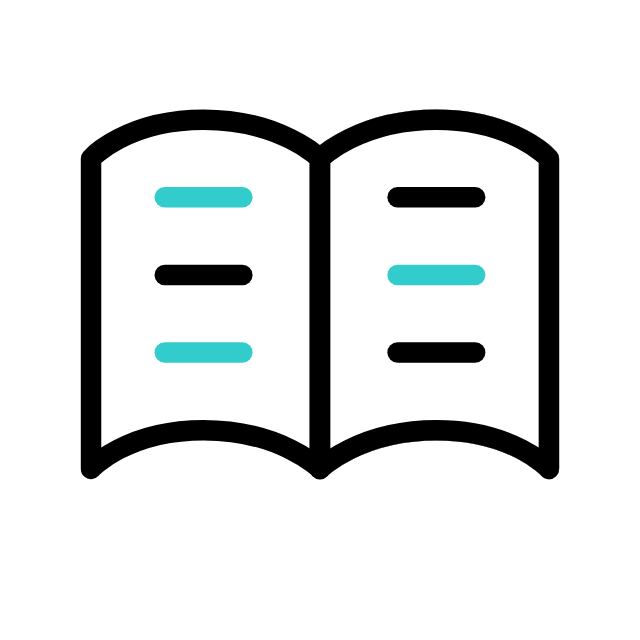
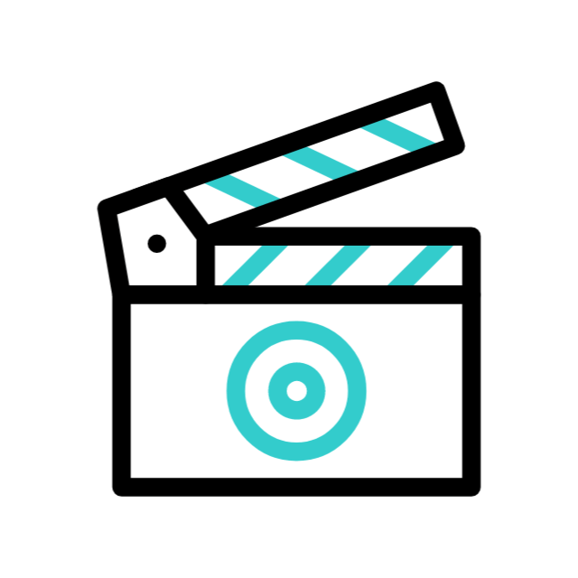
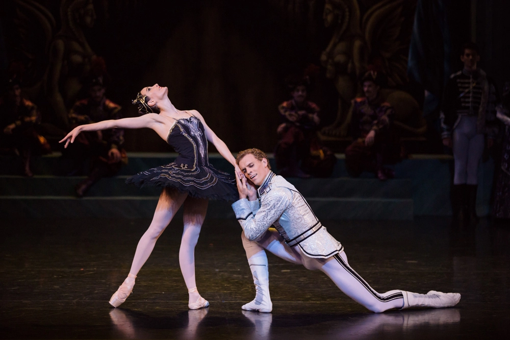
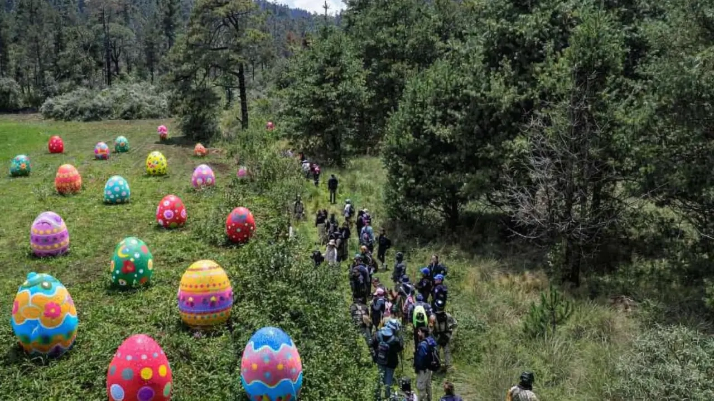

El descanso que tu mente merece
Break, tu mente también necesita recargarse
Raíces fuertes, futuro brillante
Te damos la bienvenida a un mes lleno de artistas, cineastas y escritores que iluminarán tus días.
¡Explora, descubre
y disfruta!
▼
desliza el cursor hacia abajo
literatura

Nunca es tarde para una infancia feliz
-
Ben Furman
podcast
La Estrategia del Día México
-
Bloomberg Línea
cine

Hoppers
-
Daniel Chong
¡lo nuevo de este mes está aqui!
Abril llega con una agenda diversa y actividades imperdibles para todos los gustos.
¡No te las pierdas!
▼
desliza el cursor hacia abajo
31 Minutos en el Teatro Metropólitan
¡El espectáculo «Radio Guaripolo II» de 31 Minutos llegará a la Ciudad de México en abril de
2026!
Si creciste con Tulio Triviño y Juan Carlos Bodoque esta es tu oportunidad.
Teatro Metropólitan y Auditorio Nacional
3 de abril de 2026 - 5 de abril de 2026
Comprar en Ticketmaster
Festival Gastronómico del Queso, Café y Chocolate.
Date una escapada a Tepotzotlán para disfrutar de este evento gastronómico en el que habrá
de todo: desde café y chocolate hasta quesos artesanales provenientes de distintos estados
del país.
Gran Hotel Real - avenida Lic. Benito Juárez 35, Tepotzotlán, Estado de México.
18 de abril de 2026 - 19 de abril de 2026.
Búsqueda de huevos de Pascua GRATIS
En pleno Ajusco se realizará una búsqueda de huevos de Pascua gratuita pensada especialmente
para que niñas y niños se diviertan al aire libre.
11 y 12 de abril.
Santa Montaña.
A partir de las 10:00 horas (horario habitual del restaurante)

